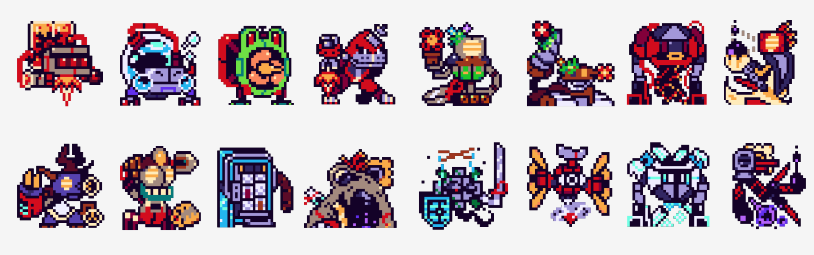

General presentation of the project
Blitzkrieg is a fast paced multiplayer team based fighting game where you can play as a large cast of robots with various unique designs, play styles, and synergies.
In the game, up to four people can play against each other using a vast array of characters.
Before a game begins, each player chooses three of the 18 playable robots before duking it out on one of the 6 available maps.
The last one standing is declared the winner.
The game put a great emphasis on team-building, strategy, and fast thinking.
The pillars of gameplay
During a match, every player has one character on the field at a time (the 1st one selected at the start of the match) while the two others act as backup, swapping with the current character either when the 1st one dies or when the player uses a specific command.
On the field, the character can move in every direction and attack left or right using one of their 3 character specific skills.
Each character possesses different stats, different for each character.
The stats are the health, speed, cooldowns, and resistances of the current character.
As backup, a character can use one of their moves, even if they are not on the field, allowing for combos and synergies between characters.
If a character is dead, it can't use its support skill, even if the character isn't fielded.
There are four types of attacks (slash, pierce, blunt and ''none'') and the resistances of a character affects the damage received by the first three (from taking 50% damage to 150%).
Statuses, inflicted by almost every attack in the game, have their own effect (ex: burning an enemy) but also have synergies when some other statuses are present on the same target (ex: an enemy covered in oil explodes when also burned).
Statuses are temporary effects applied to characters (burn, oil, freeze, etc.) that change their behavior or abilities. The originality of the game lies in the synergy between these statuses: some combined effects trigger special reactions, such as an explosion if a burning enemy is also covered in oil. Players must exploit these interactions to gain the upper hand and control the battlefield.
Before each match, every player builds their team by choosing three characters from a diverse selection. Each character has their own stats, resistances, and abilities.
Team composition is crucial: you must balance offense, defense, and status synergies to maximize your chances of victory.
The team building phase is one of the most strategic aspects of Blitzkrieg. Players must consider not only the individual strength of each character but also how they synergize with one another.
Some characters work better together due to shared status effects or complementary abilities. For instance, pairing a character that applies fire damage with one that triggers explosions on flammable enemies creates powerful combos.
Additionally, players must anticipate their opponents' strategies and build defensive or offensive teams accordingly.
The depth of team building ensures that every match feels unique, and multiple viable team compositions exist, allowing different playstyles and strategies to flourish.
 The game offers 18 playable characters, each with unique styles, abilities, and strategies. Some are specialized in direct attacks, others in support or area control. This diversity allows every player to find a style that suits them and to experiment with different combinations.
How the Gameplay works
At the end the interface of the menu should look like this.
The interface is designed to be intuitive and user-friendly,
allowing players to easily navigate
through menus, select characters, and set up matches.
For now, this is just the design concept, for the first page of the menu, even not yet implemented in the game.
Actually in the gameplay phase, you have already choosen 3 characters for your team. Two of them are on a side line as backups, while one is active on the battlefield. You can switch between your characters at any time to adapt to the situation. Each character has four unique abilities, each with its own cooldown period. You must use these abilities strategically, considering their effects, cooldowns, and potential synergies with statuses for win.
When launching the game, the player accesses an intuitive menu to set up the match (the menu without any clean desgin for the moment): choose the mode (local or online), number of players and AIs, select characters and the map. In-game, each player controls one active character but can switch at any time with one of their two backups. Battles are paced by the use of abilities with cooldowns, the application of statuses, and strategic team management. The last player with at least one character alive wins the match.
Demonstrations of the code already done (respectively for the menu and for the displacement of the character)